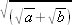

(M.Ö. Üçüncü yüzyılın ilk yarısı)
"Antikçağ biliminin modern uygarlıkla ilişkisi nedir?" diye sorulabilir. İlişkisi çoktur. Modern uygarlık dikkatini bilim ve teknoloji üzerinde yoğunlaştırmıştır. Modern bilim ise antikçağ biliminin devamıdır; antikçağ bilimi olmasaydı var olamazdı. Örneğin, Öklid yirmi iki yüzyıldan daha fazla bir zaman önce İskenderiye'de yaşamıştır; ama hala yaşamaktadır; adı geometri adıyla özdeşleşmiştir. Öklid'in başına gelen, adı bir şeyin adı ile özdeşleşen herkesin başına gelmiştir; o şey tanınır, fakat kişinin kendisi unutulur. Çocukluğumda çarpım cetveline Pitagor Cetveli deniyordu, ama öğretmen Pitagor'un kim olduğunu bize hiç anlatmadı; belki kendisi de bilmiyordu; bilseydi herhalde çok akıllı bir kimse olurdu. Pitagor, bizim için sandviç, macintosh, yada şose gibi genel bir isimdi. Şu halde Öklid için de aynı durumun geçerli olduğunu söylemek yanlış olmaz. Adı sık sık dilimizdedir, fakat onun kim olduğunu bilmeyiz. Bu kitaptaki ilk konumuzun amacı, insanların sosyal bir boşluk içinde yaşamadığını açıklamak ve Öklid'i yaşama geri getirmektir. Her şeyden önce onun içinde bulunduğu çevreyi tasvir etmeliyiz. Bu, pek çok bilim tarihçisinin utanç verici biçimde ihmal ettiği önemli bir noktadır. Büyük bilim adamlarından, onların kişiliğini ve dehalarını açıklamadan ve içinde geliştikleri sosyal çevreyi tasvir etmeden söz etmek saçmadır.
1. İskenderiye Rönesansı
History of Science adlı eserimin ilk cildinde antikçağ bilimini Hellen döneminin sonuna kadar tanımlamıştım. Öklid, bir önceki dönemden birçok yönden tamamiyle farklı olan ve genellikle Hellenistik Çağ adı verilen yeni bir dönemin başlangıcında yaşamıştır. Hellenistik sözcüğü iyi seçilmiş bir kelimedir. Hellenizm ve ona yabancı, Mısır ve Doğu ögelerini telkin etmektedir.
Tarihin en büyük değişimlerinden ya da kesintilerinden birisi olan bu iki çağ arasındaki değişime, 334 yılından, ölüm yılı olan 323'e kadarki oniki yıl içinde, dünyanın büyük bir kısmını fetheden Büyük İskender (M.Ö. IV-2) yol açmıştı. İskender, askerleri Yunanlı olduğu için Yunan kültürünü ta Asya'nın ortalarına kadar taşımıştır. Batı Asya'yı Hellenleştirdiği söylenir, ancak Doğu Avrupa'nın şarklılaşmasına da yardımcı olduğu düşünülebilir. Büyük İskender, pek çok kent kurmuştu ve bu kentler onun adını, yani İskenderiye adını taşıyordu; bunlardan bazıları da Amu Derya'nın ötesinde Sogdian'da veya İndus'un ötesinde Yukarı Hindistan'da bulunuyordu. Bunların içinde besbelli ki en önemlisi, 331'de Mısır'ın fethinden kısa süre sonra kurulan şehirdi.
Yunanlılar bu kente Alexandreia he pros Aigypto (Latincesi Alexandria ad Aegpytum) derlerdi; bu adlandırma isabetlidir, çünkü şehir Mısır'ın kenarında bulunuyordu ve Mısır'dan çok farklıydı. Bu, sanki Hong Kong Çin'e bitişiktir dememiz gibidir. Bu mukayese yerinde bir mukayesedir, çünkü Hong Kong'da yaşayanların büyük çoğunluğunun Çinli olması gibi, İskenderiye'deki halkın çoğunluğunun da Mısırlı olduğunu farzedebiliriz. Yönetici sınıf Makedonyalı veya Yunanlı idi; şehir gittikçe zenginleştiği için, Habeşistanlılar ve Nil'e gelen diğer Afrikalılar, başta Yahudiler olmak üzere İranlıların, Arapların, Hintlilerin oluşturduğu Asyalılar gibi çok çeşitli milliyetten yabancıları buraya cezbetti. İskenderiye kısa sürede dünyanın en kozmopolit kentlerinden birisi haline geldi (ve yüzyıllar boyunca da öyle kaldı). Limanı Doğu Akdenizin en büyük limanı idi ve öyle olmaya da devam etti.
Bu, çok yararlı bulduğum bir başka mukayeseyi aklıma getirmektedir; İskenderiye birçok bakımdan New York'a benzetilebilir. Eski çağda İskenderiye'nin Atina ile ilişkisi, New York'un Londra'ya bağlantısı ile mukayese edilebilir. Eğer o zaman ve şimdiki haberleşme hızı düşünülürse, İskenderiye-Atina ve New York-Londra mesafeleri aşağı yukarı aynı olur; New York Avrupa'nın bir mahsülüydü, tıpkı İskenderiye gibi. Kozmopolitliği ve özellikle Yahudiliği New York'u Amerikan İskenderiyesi yapmıştır. Ana fark, New York'un esasen Amerikan olması, İskenderiye'nin ise kesinlikle bir Yunan kolonisi olmasaydı.
İskender 323 yılının Haziran ayı ortalarında Babil'de öldü ve kısa süre sonra en yakın arkadaşlarından, Makedonyalı Ptolemaios (Lagos'un oğlu)[17] Mısır'ın yöneticisi veya kralı oldu; 304'de kendisini kral ilan etti ve M.Ö. 30 yılına kadar devam edecek olan Ptolemaios sülalesini kurdu. I. Ptolemaios Soter oldukça kabiliyetli bir kişiydi; yalnızca bir hanedanın kurucusu değil, aynı zamanda bilim ve sanat hamisiydi, ve Büyük İskender hakkında belki de en iyi tarihi yazmıştı. 283/282 yılında öldüğünde, yerine oğlu II. Ptolemaios Philadelphos geçmişti; o da 246'ya kadar yönetimde kaldı ve babasının başladığı işi tamamladı. İskenderiye Rönesansını, üçüncü yüzyılın ilk yarısı içinde esas olarak bu iki kral başarmıştı; ikisini birlikte takdim ettim, çünkü onların başarılarını ayırmak her zaman mümkün değildir.
İskenderiye'de yeni uygarlığı yaratmak için Ptolemiosların diğer Yunanlıların yardımına ihtiyacı vardı; yalnızca asker ve tacirlerin değil, çeşitli tipte münevver kimselerin, idarecilerin, filozofların, öğretmenlerin, şairlerin, sanatkârların ve bilim adamlarının yardımlarına da gereksinim duymuşlardı. Öklid'i incelemeden önce, bunların bazılarından söz etmek yerinde olacaktır.
İlkin mimarlardan söz edeceğiz; çünkü Yunan tarzında yeni bir kent inşa etmek için onlara ihtiyaç vardı. Yunanlılar büyük kent kurucuları idi ve büyük kentlerin rastgele büyümesine izin vermemişlerdi. İskenderiye'nin planı İskender tarafından ya da daha muhtemel olarak I. Ptolemaios tarafından, zamanının en seçkin mimarı olan Rodoslu Deinocrates'e emanet edilmişti. Efes'deki yeni Artemis tapınağının planını çizen de aynı mimardı ve Athos dağının tepelerinden birinin çok büyük bir İskender heykeli şeklinde kesilmesi fikrini düşünmüştü. Diğer bir mimar Knidoslu Sostratos limandaki küçük bir ada üzerine bir fener inşa etti. Bu adanın adı Pharos idi, bu nedenle fenere de aynı ad verildi.[18] Bu, kesin olarak bilinen ve tasvir edilen en eski fenerdir. Yaklaşık dörtyüz feet yükseklikteki kulesi düz araziden veya deniz üzerinden çok uzak mesafelerden görülebiliyordu. Bu fener, dünyanın yedi harikasından biri olarak sayılacak kadar meşhur olmuştur.
Pharos, İskenderiye'nin refahının gözalıcı bir sembolü idi; iki kurum, Müze ve Kütüphane ise İskenderiye kültürünün büyüklüğünü temsil eder. Yunanistan'da da daha önce müze vardı; çünkü müze şiir, tarih ve astronominin dokuz tanrıçası olan Müse'lere tahsis edilmiş bir tapınaktı; fakat İskenderiye'deki müze, adı korunmuş ve birçok dile girmiş olduğu için son derece dikkate değer olan yeni bir kurumdu. Anlamı sonradan değişmiş ve bütün dünyada müzeler esas olarak sanat, arkeoloji, tabiat tarihi, vs. sergilerini ihtiva eden bina manasına gelmiştir. Bunların en gelişmiş olanlarında belli bir miktar öğretim ve araştırma yapılmaktaydı; ancak İskenderiye örneği bunlardan çok farklıydı. Eğer bu müzenin fonksiyonunun modern dillerdeki karşılığını ararsak, İskenderiye Müze'sinin esasen bir bilimsel araştırma kurumu olduğunu söyleyebiliriz. Muhtemelen burada bilim adamları, onların asistanları ve öğrencileri için yatakhaneler, konferans salonları, açık hava çalışmaları ya da münazaraları için üstü kapalı kemer altları, laboratuvarlar, bir rasathane, botanik ve zooloji bahçeleri vardı. Müze bütün bu özelliklere başlangıçta sahip değildi; ancak her kurum gibi geliştikçe büyüklüğü ve üniteleri artmıştır. Bilimsel gelişimini, hükümdar hâmilerine ve Theophrastos'un bir öğrencisi olan Straton'a borçludur. I. Ptolemaios (300) Straton'u İskenderiye'ye davet etmişti; Lyceum'un entelektüel atmosferini getirdiği için onu Müze'nin hakiki kurucusu kabul edebiliriz ve yine onun sayesinde burası bir şiir ve belagat okulu değil, fakat bir bilimsel araştırma kurumu olmuştur. Straton tabiatın incelenmesiyle o kadar derinden ilgilenmişti ki, ho physicos, tabii bilgiler âlimi lakabı ile anılmıştı. Aristo'nun uzak ve kendi hocasının daha yakın etkisi altında, bilimsel bir temele dayanmaksızın ilerlemenin mümkün olmadığını anlamış ve Lyceum'un fiziksel (metafiziksel) eğilimlerini vurgulamıştır. 12 yıl veya daha uzun süre Mısır'da kalmış, 288 yılında Theophrastos öldüğü zaman Atina'ya geri çağırılmış, Lyceum'a başkan ya da müdür tayin edilmiş (üçüncü defa) ve orayı onsekiz yıl kadar yönetmiştir (288-270). Müze'nin, daha sonra müdürü olacağı Lyceumlu bir öğrenci tarafından organize edilmiş olduğunu düşünmek ilginçtir.
Kuruluşunun birinci yüzyılı boyunca Müze'de çok şey yapılmıştı. Matematiksel incelemeleri Öklid, ilk defa dünyanın büyüklüğünü ölçen ve bunu oldukça doğru olarak belirleyen Cyreneli Eratosthenes, konikler hakkında ilk ders kitabını yazan Pergeli Apollonios yürütmüşlerdi. Aynı çağda yaşayan diğer bir büyük bilim adamı Arşimet, Syracuse'da yetişmiştir; fakat İskenderiye'ye de gitmiş olabilir ve kesinlike buradaki matematik okulundan etkilenmiştir. Astronomi çalışmaları da aynı derecede dikkat çekiciydi, İskenderiye, astronomi bilgilerinin sentezi için ideal bir yerdi; Yunan, Mısır ve Mezopotamya fikirleri serbestçe birbiriyle kaynaşabilmişti; çünkü bir defa, kurulmuş gelenekler, hangi türden olursa olsun kazanılmış haklar yoktu; ikincisi çeşitli ırk ve din mensupları bilfiil karşılaşabilirlerdi ve karşılaştılar da. Aristyllos ve Timocharis ve kısa bir süre sonra da Samoslu Conon astronomi gözlemleri yaptılar; Conon Mezopotamyalıların tutulma gözlemlerini kullandı ve inceledi. Bu arada başka bir Samoslu, Aristarchos ise yalnızca gözlemler yapmamış, aynı zamanda kendisine "Antikçağın Kopernik'i" ünvanı verilecek kadar cesur teoriler savunmuştu.
Müze'de yürütülen anatomi araştırmaları da aynı derecede cesur ve verimliydi. Chalcedonlu Herophilos ilk bilimsel anatomist olarak adlandırılabilir. Herophilos, Ptolemaios Soter zamanında yaşamış ve muhtemelen diseksiyon yoluyla insan vücudunun ayrıntılı biçimde incelenmesini hedefleyen güzel bir araştırma programı planlamıştı. Bu işlem ilk defa sistematik bir biçimde yapıldığından, bu kimseler, yeni bir kıtayı ilk defa bulan bir kaşif gibi pek çok keşifler yapacak konumdaydılar. Herophilos başlıca araştırmacılardandı ve gözlemlerinin kataloğu o denli uzundu ki, bu, bir anatomi ders kitabının içindekiler listesi gibi mütalaa edilebilir. Herophilos kendisinden biraz daha genç bir başka Yunanlı, Ceoslu Erasistratos'dan yardım görmüştü; Erasistratos anatomi araştırmalarını devam ettirmiş ve daha çok fizyoloji ile ilgilenmiştir. Celsus (I-1) ve putperest bilimini itibardan düşürmeye istekli Kilise Babaları, İskenderiyeli anatomistlerin ölü bedenlerin diseksiyonu ile yetinmediklerini, fakat organların işleyişini daha iyi anlayabilmek için canlıların vücutlarında da diseksiyon yapmak için izin almaya muvaffak olduklarını iddia etmişlerdi. Celsus'un anlattığı şekliyle hikaye makuldur. Eskilerin bizden daha az duyarlı olduğunu ve İskenderiyeli anatomistlerin dinî veya sosyal sınırlamalarla engellenmediklerini aklımızda tutmalıyız. Bildiğimiz kadarıyla tıp Müze'nin araştırma programında yer almıyordu. Straton veya Herophilos şuna karar vermiş olabilirler: tıp sanattan çok daha farklı bir şeydir, pür bilimsel araştırmaya da ödül verir; ancak "deneysel tıp" için henüz vakit gelmemişti.
Matematik, astronomi, matematiksel coğrafya, anatomi ve fizyoloji konularında ortaya konan eserlerin çoğu analitik idi. Öklid'in Elementler'i hariç, bilim adamları bugün müstakil kitaplarda değil, fakat dergilerde yayınlanan, monografi dediğimiz türden yazılar yazmışlardı. Bu da İskenderiye Rönesansının tam bir rönesans olduğu gerçeğini hatırlatmaktadır. Kesintinin ve onu takip eden değişimin Büyük İskender tarafından gerçekleştirildiğini başta söylemiştim. Bunun vurgulanmaya değer bir başka yönü daha vardır. İskender'in gençliğinde başka bir Makedonyalı, ondan daha büyük bir adam, hocası Aristo daha derin bir kesintiye sebep olmuştu. Aslında Aristo'nun "büyük", İskender'in "küçük" olduğunu söylemek daha doğru olur, Aristo bir filozof, bir bilimadamı, bütün bilgiyi organize etmeye ve birleştirmeye çalışan bir ansiklopedist idi. Onun zamanını ve koşullarını gözönünde bulundurursak, başardıkları hayret uyandırıcıdır ve elde ettiği neticeler iki bin yıl geçerli kalmıştır. İskender'in zaferleri kısa ömürlü, Arsito'nunkiler ise devamlı ve fazlasıyla verimli olmuştur. Aristo'nun ölümünden sonra Atina'daki ve daha ziyade İskenderiye'deki öğrencileri Aristo'nun yapmış olduğu sentezi geliştirmenin en iyi yolunun, hatta tek yolunun analiz vasıtasıyla olduğunu anlamışlardı.
Dördüncü yüzyılda Atina'daki yaklaşımların tersine, İskenderiye Rönesansı bir analiz ve araştırma dönemiydi. Bu, ilerlemenin temel ritimlerinden birinin gözalıcı bir örneğidir: Bu ritm analiz, sentez, analiz, sentez biçiminde sonsuza kadar devam eder.
Öncü iki kurumdan bilim tarihçilerinin daha çok ilgisini çeken Müze'dir. Ancak muhtemeldir ki kütüphane, müze'nin tamamlayıcı bir parçasıydı (her araştırma kurumunun kendi kütüphanesine sahip olması gibi); her iki kurum da kraliyet şehrindeydi; her ikisi de kraliyet kurumlarıydı; bugünkü devlet kuruluşları gibiydiler, çünkü kral devlet demekti ve kamu yararına yapılan her şey kralın teşviği ve harcamalarıyla yapılıyordu ya da hiç yapılmıyordu. Müze ve kütüphanesi kamu yararına olan kurumlardı.
Son zamanlarda Kütüphane ile ilgili ayrıntılı bir çalışmayı, elde edilebilir bütün dökümanları biraraya getiren Dr. Parsons yayınladı;[19] ancak onun gayreti ve maharetine rağmen, kütüphaneye ilişkin bilgimiz halen çok kısmidir. Pek çok soru hâlâ cevaplandırılamamaktadır. İlk organizatör'ün, aynı zamanda ilk kolleksiyoncunun Phaleronlu Demetrios olduğu kesin gibidir; Demetrios ilk kral ile çok sıkı ilişki içerisinden çalışmıştı ve belki de krala gerçek kurucu olduğu hissini verecek kadar zekiydi. Dr. Parsons, Demetrios ile başlayan ve seksenbirinci olan Samothraceli Aristarkos (M.Ö. 145) ile biten bir kütüphaneciler listesi verir; bu liste ileri sürülen pek çok varsayıma rağmen çok ilginçtir. Buradan çıkartılabilen ana netice, kütüphanenin yaratıcı faaliyet döneminin yalnızca birbuçuk yüzyıl sürdüğüdür (aksi takdirde daha sonraki kütüphanecilerin adlarını bilirdik); bu dönem ticarî refahın en fazla olduğu döneme denk gelmektedir. M.Ö. ikinci yüzyıldan sonra, kütüphane gerilemiş ve duraklama dönemine girmiştir. İskenderiye Kütüphanesi zirvede olduğu dönemde çok zenginleşmişti; 400.000 "tomar" ihtiva etmiş olabilir. Fakat bundan emin olmak mümkün değildir, çünkü hem bu konudaki kaynaklar noksandır hem de tomar ve kitapların sayılması ve bunların toplamının hesaplanması sanıldığı kadar kolay bir iş değildir. Elbette bu kütüphane ilk kütüphane değildi, fakat antikçağın en büyük kütüphanesiydi ve İslam Dünyasında, hem Doğu'da Bağdat'da ve hem de Batı'da Cordoba'da çok büyük kitap kolleksiyonlarının toplandığı onuncu yüzyıla kadar eşdeğer başka bir kütüphane kurulmamıştı.[20] Üçüncü yüzyılın ortalarına kadar İskenderiye Kütüphanesi o denli büyüdü ki, yeni bir kütüphane oluşturmak ya da kütüphaneye yeni bir bina eklemek gerekli oldu. Bu ikinci kütüphane, özellikle Roma döneminde şöhret kazanan Serapeion idi.
İskenderiye Kütüphanesi pek çok hadiseden zarar görmüştür. M.Ö. 48 yılında, Caesar, Kütüphanenin yakınındaki limanda Mısır donanmasını yakmak zorunda kaldığı zaman, kütüphane zarar görmüş (veya pek çok kitap kaybolmuş) olabilir. Birkaç yıl sonra, 40 yılında ise, Anthonius'un Pergamon'daki kütüphaneyi Cleopatra'ya vermiş olduğu söylenmektedir; fakat bu gerçekten olmuş mudur? Yahudi tarihçi Joseph (I-2) zamanında her iki kütüphane de hala çok zengindi. Düşüş ikinci yüzyıl boyunca hızlanmıştı ve (başka şeylerin yanısıra) pek çok kitabın Roma'ya verilmiş olduğuna inanmak için geçerli sebepler vardır. Aurelius (imparator, 270-75) zamanında müze ve ana kütüphane mevcut değildi; o zaman Serapeion'daki kütüphane ana kütüphane ve Pagan kültürünün son sığınağı haline gelmişti; 391'de, paganizme son vermek isteyen Theophilos (İskenderiye piskoposu, 385-412) Serapeion'u tahrip etti; mamafih bu tahribin kütüphanenin tamamını kapsamaması ve bir biçimde pek çok kitabın kurtarılabilmiş olması da mümkündür. Ancak, eğer Orosius'un yaklaşık 416'daki tahminine inanırsak, kurtarılan çok fazla kitap yoktu. 646 yılında Müslümanlar İskederiye'yi istila ettikleri zaman, kütüphaneyi tahrip ettikleri iddia edilmiştir; bundan yalnızca Kütüphaneden geriye kalan çok az şeyi tahrip ettikleri kastedilebilir. Bu büyük kütüphanenin tarihi, doğru biçimde anlatılabilirse, İskenderiye (Pagan) kültürünün gerileyiş ve düşüş tarihi anlatılmış olur. Bu yapılamaz; fakat zirvede olduğu dönemin Hıristiyanlıktan önce olduğu kesindir.
Tekrar altın günlere dönelim. Her konuda bilgi edinmek için Kütüphane esas merkezdi; fakat beşerî bilimler için bundan çok daha fazlası idi; her türlü edebi ve tarihi incelemenin beyni ve kalbiydi. Astronomlar gökyüzünü gözlemlemişler ve yeryüzünü ölçmüşler, anatomistler insan bedeni üzerinde diseksiyon yapmışlardı. Ancak, tarihçilerin ve filologların başlıca materyali başka bir yerde değil, kütüphanedeki kitaplarda bulunuyordu.
Kütüphanecilerin görevi, neredeyse tamamı ve her biri çok anlaşılır nesneler olan basılı kitaplarla uğraşan bugünkü meslektaşlarınınki kadar kolay değildi. İlk teknik kütüphaneci Efesli Zenodotos, tomarları teşhis etmek ve örneğin İlyada ve Odisse tomarlarını biraraya toplamak zorunda kalmıştı. Zenodotos, gerçekte, bu destanların ilk bilimsel editörüydü. Aynı süreç bütün tomarlar için izlenmeliydi; bunların araştırılması, birer birer teşhis edilmesi, sınıflandırılması ve nihayet mümkün olduğu kadar çok sayıda tomarın çoğaltılması gerekiyordu; her bir yazarın metni tesis edilmeli (örneğin Homer'in metninin tesisi, Hippokrat'ın eserlerinin tesbiti, vs.) ve ölçütler belirlenmeliydi. Başka deyişle Zenodotos ve izleyicileri yalnızca kütüphaneci değil, aynı zamanda filologdular. Şair ve araştırmacı Cyreneli Callimachos üçüncü yüzyılın ortasından önce İskenderiye'ye gelmiş ve Kütüphanenin Pinaces diye tanınan katalogunun hazırlanmasında çalışmıştı; bu katalog türünün en erken örneğiydi.[21] Bu katalog 120 tomar ihtiva ettiğinden çok büyüktü. Keşke bu katalog muhafaza edilmiş olsaydı! Tamamı Yunanca olmayan antik literatür hakkındaki bilgimiz bundan çok daha fazla olurdu. Gerçekten, İskenderiyeli araştırmacıların kullandıkları kitapların büyük kısmı uzun zamandan beri mevcut değildir; genellikle kayıp kitapların ve yazarlarının adlarını biliyoruz; bazı güzel durumlarda başka kitaplar vasıtasıyla bize intikal etmiştir; ender durumlarda da kitapların tamamı korunmuştur.
Pek çok tarihçi İskenderiye Kütüphanesini kullanmıştır; burayı ilk kullananlardan birisi muhtemelen, İskender'in yaşamını yazan ilk kral Ptolemaios Soter idi. Mısır'daki belgelere dayanarak Yunanca Mısır Vakayınâmesi yazan Manethon'unki farklı bir durumdur (bu dökümanların Kütüphanede mi yoksa tapınaklarda mı mevcut olduğu belirlenemedi). Kütüphaneci olan büyük coğrafyacı Eratosthenes (bu pozisyona sahip olan tek bilim adamı, aynı zamanda seçkin bir edebiyatçıydı) tarihsel araştırmanın esas ihtiyacının bilimsel kronoloji olduğunu anlamıştı. Tek bir ülke ile, diyelim ki Mısır ile ilgilenildiği zaman, Manethon'un ortaya koymaya çabalamış olduğu gibi tam bir hanedan tarihi yeterli olabilirdi, ancak pek çok ülke incelenmek zorunda kalındığında, bunların ulusal kronolojileri arasında bağlantı kurulabilmelidir ve bu da bunların hepsine uygulanacak bir kronolojik iskelete sahip olmadan mümkün değildir. Bu tür ilk iskeleti Olimpiyat oyunlarını referans olarak kullanmayı öneren Sicilyalı Timaios tasarlamıştır. Olimpiyat oyunları Yunanca konuşan dünyada uluslararası bir hadise haline gelmişti ve yabancıların o dönemlerde katıldıklarını kabul edebileceğimiz kadar önemliydi; 776 yılından itibaren her dört yılda bir düzenlenmişti ve bu sebeple uluslararası bir kronolojik cetvel sağlamış olabilirdi.[22]
Timaios'un Müze'deki tarihçilerle ilişkisi olup olmadığı ve Eratosthenes'in keşfini geliştirip geliştirmediği sarih değildir. Olimpiyat skalası, çok geç teklif edildiği için (M.Ö. 3. yüzyılın başlangıcı) uzun süre kullanımda kalamadı. Batı dünyasının hükümdarları onun yerine başka bir skala (Roma, M.Ö. 753'de Roma'nın kuruluşundan başlayan bu skalayı) geçirmişlerdi, ve zamanla Hıristiyan ve Müslüman tarihleri tamamen onun yerini aldı.[23] Akılda tutulacak nokta, bilimsel kronolojinin İskenderiye'de başlamış olduğudur; Eratosthenes'in bu konuyla ilgisi onun coğrafi koordinatlara ilgisiyle mukayese edilebilir; coğrafi koordinatlar, iki boyutlu bir süreklide (yani küresel bir yüzey üzerinde), bir zaman çizgisi boyunca tarihleri belirleme ihtiyacına benzer bir ihtiyacı karşılar.
Metinlerin tesbiti ve bunların tesisi filolojinin her dalına, ilk plânda da gramere kapıyı açtı. Gramer yalnızca bir metnin anlamını hiç bir muğlaklığa yer bırakmadan belirlemek için gerekli değildi, fakat aynı zamanda İskenderiye gibi bir çok dilin konuşulduğu bir kentte yabancılara Yunanca öğretmek için de gramer zorunlu idi. Eratosthenes, kendisine filolog (philologs) adını veren ilk kimseydi. Bizanslı Aristophanes (M.Ö. II-1) ve Samoslu Aristarkos (M.Ö. II-1) kelimenin tam anlamıyla ilk gramercilerdi.[24] Her ikisi de Müze'nin kütüphanecileriydi; Aristophanes 195 yılından 180 yılına kadar, Aristarkos ise yaklaşık 160 yılından 143'e kadar (ya da 131'e kadar ?)[25] bu görevde kalmışlardı. Mevcut en erken Yunan gramerini bir başka İskenderiyeli, Dionysios Thrax (M.Ö. II-1) yazmıştı. Yunan edebiyatının şaheserleri M.Ö. 300'den önce, ilk gramer ise hemen hemen ikiyüz yıl sonra yazılmıştı. Hellenistik çağın, anatominin gelişimi kadar gramerin gelişimine de şahit olması gerçeği tabii bir hadisedir. Bunlar, ilkin dile ve ikinci olarak da insan vücuduna uygulanmış, aynı analitik ve bilimsel zihniyetin ürünleriydiler.
Epeydir Öklid'i bekletiyoruz; şimdi ona dönmenin vakti geldi; ancak onun zamanının en hayret verici filolojik başarısından, Septuagint'ten (yani Eski Ahit'in Yunanca tercümesinden) birkaç kelimeyle söz etmemiz gerekir.
Bu isim bir anda kendisini açıklayacaktır. Yahudi Aristeas tarafından Yunanca anlatılan hikâyeye göre,[26] Phaleronlu Demetrios kral II. Ptolemaios'a Tevrat'ın Yunacaya tercüme edilmesi gerektiğini anlattı. Bu, İskenderiye'deki büyük ve etkin Yahudi kolonisinin İbrani dili üzerindeki hakimiyetini kaybettiğinin göstergesidir; öte yandan da, Tevrat'ın Yunancaya tercümesi Yahudi olmayanlardan bazılarının da ilgisini çekebilirdi. Kral, Kudüs'deki baş papaz Eleazar'a, Eski Ahit'in İbranice tomarları ile birlikte her kabile için altı temsilci istemek üzere iki elçi gönderdi. Kralın isteği yerine getirilmiş ve kısa sürede yetmişiki Yahudi araştırmacı Phraos adasına yerleşmiş ve kutsal yazıları tercüme etmeye başlamışlardı. Bu tercümeye Septuaginta duo adı verilmiş olabilir; ancak ikinci kelime atıldı.
Aristeas'ın hikâyesi sonraki yazarlar tarafından ilâvelerle süslendi, fakat ayrıntılar önemli değildir. Tevrat aslında üçüncü yüzyıl boyunca Yunancaya tercüme edilmişti. Eski Ahit'in diğer kitapları daha sonra tercüme edildi; çoğu M.Ö. ikinci yüzyılda çevrilmişti, sonuncusu Qoheleth (Ecclesiastes) ise M.S. 100 yılı sıralarına kadar çevrilmemişti.[27]
Eski Ahit'in bu Yunanca tercümesi çok önemlidir; çünkü bize ulaşan İbranice metinden daha eski bir İbranice metne dayanarak yapılmıştı.[28] Bundan dolayı, Eski Ahit'i inceleyen bir kimse İbranice kadar Yunanca da bilmelidir.
Eski Yunanlılar, kendi kolonilerine çok yakın olan ve Filistin bölgesinde yaşayan bu tuhaf insanlara pek dikkat etmemişlerdi. Hellenistik çağda bu durum değişmiştir; çünkü Yunanlılar ve Yahudiler Mısır'da aynı muhiti paylaşmışlardır. Bu durum, Hellenistik dönemdeki araştırmacıların İbranice kutsal yazıların gelenekselleşmesine bilfiil yardımcı olmalarına kadar sürmüştür.
2. Öklid
Ve nihayet Öklid'i[29] inceleyelim. Onun çevresini, etrafındaki insanları ve olup bitenleri çok sarih biçimde hayalimizde canlandırabiliriz; ancak kendisi kimdi?
Ne yazık ki onun hakkındaki bilgimiz çok sınırlıdır. Bu, istisnai bir durum değildir. İnsanoğlu tiranları, başarılı politikacıları, zengin kimseleri hatırlar; ancak gerçek velinimetlerini unutur. Shakespeare hakkında neler biliyoruz? Öklid hakkında bildiğimiz her şeyi size anlatacağım, ve bu çok uzun olmayacak.
Doğum ve ölüm yerleri ve tarihleri bilinmemektedir. Muhtemelen Atina'da eğitim görmüştü, ve eğer öyle ise, matematik eğitimini Akademi'de almıştır; İskenderiye'de I. Ptolemaios ve muhtemelen II. Ptolemaios zamınında yaşadı. Kişiliğini göstermek için iki anekdot anlatılır. Kral I. Ptolemaios'un ona geometriyi öğrenmek için Elementler'den daha kısa bir yol olup olmadığını sorduğu, onun da krallar için özel bir geometri öğrenme yolunun bulunmadığı cevabını verdiği anlatılır. Bu, Öklid düşünüldüğünde doğru olamayacak, ancak ebedi geçerliliği olan mükemmel bir hikâyedir. Matematik "hatır gönül" dinlemez. Diğer anekdot da aynı derecede güzeldir. "Öklid ile geometri okumaya başlayan birisi ilk teoremi öğrendiği zaman, ‘bunları öğrenerek ne kazanacağım' diye sormuş, Öklid de uşağını çağırarak "Buna bir sikke ver; çünkü öğrendiklerinden kazanç elde etmeyi düşünüyor" demiş.
Her iki anekdot da oldukça geç tarihlerde, ilkin Proclos tarafından, ikinci olarak Stobaios tarafından kaydedilmiştir; her ikisi de beşinci yüzyılın ikinci yarısında yaşamışlardır; bu anekdotlar yeterince inandırıcıdır ve bu tür sade gelenekler unutulmaz.
Öklid'in Müze ile resmi bağı yoktu; aksi takdirde bu durum kaydedilmiş olurdu. Ancak eğer İskenderiye'de yetiştiyse, Müze ve Kütüphaneyi bilmesi gerekir. Mamafih, bir kuramsal matematikçi olarak, herhangi bir laboratuvara ihtiyaç duymamış ve sahip olduğu yazmalar onu kütüphaneden bağımsız kılmıştır. İhtiyaç duyduğu yazma sayısı çok değildi; iyi bir öğrenci okul yılları boyunca ihtiyaç duyduğu metinleri kolaylıkla kopya edebilirdi. Bir matematikçi mesai arkadaşına pek ihtiyaç duymaz; tıpkı bir şair gibi en iyi yalnız başına, sessizce çalışır. Öte yandan, birkaç öğrenciye hocalık da yapmış olabilir; bu doğaldır ve Pappos'un, Pergeli Apollonios'un (M.Ö. III-2) İskenderiye'de Öklid'in öğrencileri tarafından yetiştirildiğine dair ifadesi bunu teyit etmiştir.
Öklid hakkında o kadar az şey biliniyordu ki, çoğu kez filozof Megaralı Öklid[30] ile karıştırılmıştır; Megaralı Öklid Sokrates'in öğrencilerinden biri (hocasının ölümüne refakat eden vefakârlardan biri), Platon'un bir arkadaşı ve Megara'da bir felsefe okulunun kurucusu idi. Bu karışıklık çok erken bir dönemde başlamış ve 16. yüzyılın sonlarına kadar ilk yayıncılar tarafından sürdürülmüştür. Bir Öklid nüshasında bu hatayı ilk defa düzelten ve yapmış olduğu Latince tercümesinde bu şekilde kaydeden kişi Federigo Commandino olmuştur (Pesaro, 1572).
Öyleyse Öklid, Homeros'a benzer. Herkes İlyada ve Odisse'yi bildiği gibi, Elementler'i de bilir. Homeros kimdir? İlyada'nın yazarıdır. Öklid kimdir? Elementler'in yazarıdır.
Elementler, zamanımıza ulaşmış en eski geometri el kitabıdır. Önemi kısa zamanda anlaşılmış ve böylece kitap bütünlüğünü kaybetmeden bize kadar intikal ettirilmiştir. Kısaca aşağıda betimlenen onüç bölüme ayrılır:
I.-VI. Kitaplar: Düzlem geometri. Kuşkusuz I. Kitap temeldir; tanım ve postülaları ihtiva eder ve üçgen, paralelkenar, vs. ile ilgilidir. II. kitabın içeriğine "geometrik cebir" denilebilir. III. Kitap: Daire geometrisi. IV. Kitap: Düzgün çokgenler. V. Kitap: Ölçülebilen niceliklerin yanısıra ölçülemeyen niceliklere de uygulanan orantı teorisi. VI. Kitap: Bu teorinin düzlem geometriye uygulamaları.
VII.-X. Kitaplar: Aritmetik, sayılar teorisi. Pek çok çeşit sayı, asal sayılar veya birbirine göre asal olan sayılar, en küçük ortak çarpan, geometrik dizi sayıları, vs. X. Kitap, Öklid'in şaheseri, irrasyonel doğru parçalarına, a ve b ölçülebilen doğru parçaları olmak üzere

gibi bir ifade ile temsil edilebilen bütün doğru parçalarına hasredilmiştir.
XI.-XIII. Kitaplar: Uzay geometri. XI. kitap, I. ve VI. kitaplara çok benzer biçimde üçüncü boyutu kapsamına almıştır. XII. kitap tüketme metodunu dairelerin, kürelerin, piramitlerin, vs. ölçülmesine uygular. XIII. kitap düzgün cisimlerle ilgilidir.
Platon'un fantastik kurguları düzgün çokyüzlü teorisini önemli hale getirmişti. Bundan dolayı pek çok kimse tarafından "Platon çokyüzlüleri"nin[31] sağlam bir bilgisi geometrinin tacı olarak kabul edildi. Proclos (V-2), Öklid'in bir Platoncu olduğunu ve geometri şaheserini Platon'un şekillerini açıklama amacıyla tesis ettiğini söylemiştir. Bu görüş tamamen yanlıştır. Kuşkusuz Öklid bir Platoncu olabilir; ancak bir başka felsefeyi tercih etmiş veya felsefî yaklaşımlardan dikkatle kaçınmış da olabilir. Düzgün çokyüzlü teorisi uzay geometrinin tabii olarak en yüksek noktasıdır ve bundan dolayı Elementler ancak bu konu ile bitebilirdi.
Mamafih, Öklid'in çabalarını sürdürmeye çalışan ilk geometricilerin düzgün cisimlere özel bir önem vermiş olmaları şaşırtıcı değildir. Öklid'in "matematik ötesi" olan bu cisimler hakkında düşündükleri, özellikle Yeni Platoncular için geometrinin en cazip konularıydı. Bu konular sayesinde geometri kozmik bir mana ve teolojik bir değer kazandı.
Elementler'e XIV. ve XV. kitaplar adıyla, düzgün cisimlerle ilgili iki kitap daha ilave edilmiş ve bunlar yazma veya basma pek çok edisyon ve tercümeye dahil edilmişlerdi. "XIV. Kitap" M.Ö. ikinci yüzyılın başlangıcında İskenderiyeli Hypsicles tarafından telif edilmişti; bu çok değerli bir çalışmadır; "XV. Kitap" ise çok daha geç tarihlidir ve nitelik olarak ikinci derecededir; Miletli Isidoros'un (yaklaşık 532, Ayasofya'nın mimarı) bir öğrencisi tarafından yazılmıştır.
Öklid'e ve özellikle ana eseri Elementler'in onüç kitabına dönelim; Öklid'i değerlendirirken, sık sık yapılan birbirinin karşıtı iki yanlıştan kaçınmalıyız. İlki, ondan sanki geometrinin babasıymış, yaratıcısıymış gibi bahsedilmesidir. "Tıbbın babası" ünvanı verilen Hippokrates vesilesiyle açıklamış olduğum üzere, gökyüzündeki Babamız haricinde başka bir baba yoktur. Eğer yapmamız gerektiği gibi, Mısır ve Mezopotamyalıların gayretlerini de hesaba katarsak, Öklid'in Elementler'inin bin seneden daha uzun bir süre zirvede kaldığını anlarız. Öklid ‘in geometrinin babası olmaya layık olduğuna başka bir sebeple de itiraz edilebilir. Kuşkusuz pek çok keşif ondan önce yapılmıştı; o, başkalarının ve kendisinin bulduğu bütün bilginin bir sentezini yapmak ve bütün bilinen teoremleri sağlam bir mantikî sıraya koymak bakımından ilkti. Ama bu ifade de tamamen doğru değildir. Çünkü teoremler Öklid'den önce ispat edilmiş ve bunlar arasında bağlantılar kurulmuştu; ayrıca Elementler, Öklid'den önce Chioslu Hippocrates (M.Ö. V), Leon (M.Ö. IV-1), ve Manisalı Theudios (M.Ö. IV-2) tarafından da yazılmıştı. Öklid'in kesinlikle aşina olduğu Theudios'un eseri Akademi için hazırlanmıştı; Lyceum'da da benzeri bir eserin kullanılmış olması mümkündür. Herhalukârda Aristo Eudoxos'un orantı teorisini ve tüketme metodunu biliyordu ki bu konuları Öklid de Elementler'in V., VI. ve XII. kitaplarından serimlemişti. Kısaca, ister Elementler'in özel teorem ya da yöntemlerini düşünün, isterse Elementler'in düzenlenişini düşünün, Öklid çok az konuda tam bir yenilik getirmişti; eskilerin yaptıklarından daha iyisini onlarınkinden daha büyük bir ölçek üzerinde yaptı.
Bunun tam aksi olan diğer hata ise, Öklid'i hiçbir şey bulmamış ve sadece başkalarının buluşlarını daha iyi bir sıra dahilinde biraraya getirmiş bir "ders kitabı yazarı" olarak düşünmektir. Bugün elemanter bir geometri kitabı hazırlayan bir öğretmenin yaratıcı bir matematikçi olarak düşünülemeyeceği açıktır; o bir ders kitabı yazarıdır (yazarın amacı yalnızca gösteriş olsa bile, yine de mesleği faydasızdır denemez); fakat Öklid bir ders kitabı yazarı değildi.
Elementler'de bulunan birçok teorem daha önceki geometricilere atfedilebilir; fakat başkalarına atfedilemeyenlerin Öklid tarafından bulunduğunu farzedebiliriz ve bunların sayısı oldukça fazladır. Düzenlemeye gelince, bunun büyük ölçüde Öklid'in katkısı olduğunu varsaymak doğru olur. Öklid, ahenk, iç güzellik ve sarahat bakımından Parthenon kadar fevkâlâde, ancak kıyas kabul etmez biçimde daha karmaşık ve daha dayanıklı bir şaheser yaratmıştır.
Bu cesur cümlenin tam bir ispatı birkaç paragrafta ya da birkaç sayfada verilemez. Elementler'in zenginliğini ve büyüklüğünü değerlendirmek için, Heath'inki gibi iyi açıklanmış bir tercümesini incelemek gerekir. Burada birkaç noktayı vurgulamaktan daha fazlasını yapmak mümkün değildir. İlk prensipleri, tanımları, postülaları, aksiyomları, teoremleri ve problemleri açıklayan I. Kitabı inceleyelim. Bugün, daha iyisini yazmak mümkündür; fakat yirmi iki yüzyıl önce birisinin bunu yapabilmiş olması inanılması güç bir şeydir. I. Kitabın en şaşılacak kısmı Öklid'in postüla seçimidir. Bu meselelerde Öklid'in hocası kuşkusuz Aristo idi; Aristo, onun dikkatini matematik prensiplere yöneltmiş, postülalardan kaçılamayacağını ve bunları asgariye indirgemek gerektiğini göstermiştir;[32] ancak postülaların seçimi Öklid'e aittir.
Özellikle beşinci postülanın seçimi, belki de onun en büyük başarısıdır, bu, "Öklid" adını ölümsüzleştirmede diğer başarılarından daha fazla rol oynamıştır. Bu postülayı harfi harfine alıntılayalım:[33]
"... Eğer bir çizgi iki çizgiyi, aynı tarafta 180o den küçük iç açılar oluşturacak biçimde keserse, bu iki çizgi sonsuza uzatıldığında, iç açıların 180o den küçük olduğu tarafta kesişirler."
Ortalama zeka sahibi bir kimse bu önermenin açık olduğunu ve ispata ihtiyaç olmadığını söyleyebilir; iyi bir matematikçi ise bir ispata gerek olduğunu anlar ve bunu vermeye teşebbüs eder; bir ispatın gerekli, ancak imkansız olduğunu anlamak ise müstesna bir kabiliyet gerektirir. O zaman Öklid'in bakış açısına uygun düşecek şekilde bunu bir postüla olarak kabul edip ilerlemekten başka çıkar yol yoktur.
Öklid'in, bu önemli kararının kanıtlamış olduğu dehasını ölçmenin en iyi yolu, bunun neticelerini kontrol etmektir. Öklid'e bakıldığında varılacak ilk netice, Elementler'inin mükemmel bir şekilde tanzim edilmiş olmasıdır. İkincisi ise, matematikçilerin onu düzeltmek için yaptıkları sonsuz sayıdaki teşebbüslerdir; bu teşebbüsde bulunanlardan ilki Batlamyus (II-1) ve Proclos (V-2) gibi Yunanlılar; sonra Nasreddin Tusi (XIII-2) gibi Müslümanlar; Levi ben Gerson (XIV-1) gibi Yahudiler; ve nihayet John Wallis (1616-1703), San Remolu Cizvit papaz Gerolama Saccheri (1667-1733) (Euclides ab omni naevo vindicatus adlı eserinde), İsviçreli[34] Johann Heinrich Lambert (1728-77), ve Fransız Adrien Marie Legendre (1752-1833) gibi "modern" matematikçilerdi. Bu liste daha uzatılabilir, ancak bu isimler yeterlidir; çünkü bunlar, son yüzyılın ortalarına kadar, pek çok ülkeyi ve çağı temsil eden meşhur matematikçilerin adlarıdır. Üçüncü neticeyi ise, beşinci postülanın alternatiflerinin listesi oluşturur. Bazı zeki kimseler, kendilerini bu postüladan kurtarabileceklerini düşündüler ve beşinci postülaya eşdeğer (açık veya kapalı olarak) bir başka postüla getirme pahasına buna muvaffak oldular. Örneğin,
"Eğer bir doğru parçası iki paralelden birini keserse, diğerini de kesecektir".
(Proclos)
"Verilen herhangi bir şekle, herhangi büyüklükte benzer bir şekil vardır".
(John Wallis)
"Verilen bir doğru parçasına, verilen bir noktadan yalnızca bir paralel çizilebilir".
(John Playfair)
"Üçgenin üç açısının toplamı iki dik açıya eşittir".
(Legendre)
"Aynı doğru parçası üzerinde bulunmayan üç noktadan bir daire geçer".
(Legendre)
"Eğer bir üçgenin alanının, verilen herhangi bir alandan daha büyük olmasının mümkün olduğunu ispat edebilseydim, tüm geometriyi mükemmel dakiklikte ispatlayacak durumda olurdum".
(Gauss, 1799)
gibi ifadeler bunlardan bazılarıdır.
Bütün bu bilim adamları, aynı işi gören başka bir postüla kabul edilirse, beşinci postülanın gerekli olmadığını ispatladılar. Mamafih, bu alternatiflerden (yukarıda alıntılananlardan ve başka pek çoğundan) bir tanesinin kabulü geometri öğretiminin güçlüğünü arttırır; bunlardan bazısının kullanımı çok suni gibi görünür ve genç öğrencilerin cesaretini kırar. Basit bir açıklamanın daha güç olanına tercih edileceği açıktır; kaçınılabilecek engelleri yükseltmek öğretmenin beceriksizliğini ve onun sağduyu noksanını ispat eder. Dehası sayesinde Öklid bu postülanın gerekliliğini görmüş ve sezgisel olarak en yalın biçimini seçmişti. Beşinci postülayı, onun yerini başka bir postülanın alacağını anlamadan reddedecek kadar kör pek çok matematikçi de vardı. Bir postülayı kapıdan dışarı attılar ve farkında olmadan pencereden bir diğeri geldi.
Dördüncü ve en dikkat çekici netice, Öklid dışı geometrilerin ortaya çıkışıydı. Başlatıcılarının adları zaten verildi; Saccheri, Lambert, Gauss. Madem ki beşinci postüla ispat edilemiyor, onu kabul etmeye mecbur değiliz, ve eğer öyleyse, ihtiyatla onu reddedelim. Beşinci postülaya muhalif bir postüla üzerine ilk defa yeni bir geometri kuran bir Rus matematikçisi, Nikolai Ivanovich Lobachevskii (1793-1850) oldu. Lobachevskii, verilen bir doğru parçasına verilen bir noktadan birden fazla paralel çizilebileceğini, ya da bir üçgenin açılarının toplamının 180o den küçük olduğunu kabul etti. Öklid dışı geometrinin keşfi aşağı yukarı aynı tarihlerde bir Transilvanyalı, Jànos Bòlyai (1802-60) tarafından da yapıldı. Bir süre sonra başka bir geometrinin taslağı bir Alman matematikçisi, Bernhard Riemann (1822-66) tarafından çizildi; Riemann, Lobachevskii ve Bòlyai'nin yazılarından haberdar değildi ve tamamen yeni varsayımlar kabul etti. Riemann'ın geometrisinde paralel çizgiler yoktur ve bir üçgenin açılarının toplamı iki dik açınını toplamından daha büyüktü. Büyük matematik hocası Felix Klein (1847-1925) bütün bu geometrilerin ilişkisini gösterdi. Öklid'in geometrisi sıfır eğimli bir yüzeye işaret eder; pozitif eğimli bir yüzey (küre gibi) üzerindeki Riemann geometrisi ile negatif eğimli bir yüzeye uygulanan Lobachevskii geometrisi arasında yer alır. Daha kısa olarak, Öklid geometrisine parabolik geometri adını verdi. Çünkü bu, bir taraftan elliptik (Riemann'ın) geometrinin ve öte yandan hiperbolik (Lobachevskii'nin) geometrinin limitidir.
Bütün geometri kavramlarını Öklid'in bulmasını beklemek haksızlık olurdu; sağduyudan farklı bir geometri düşüncesi onun aklına asla gelmedi. Ancak, beşinci postülayı ifade etti ve yol ayırımında durdu. Bunu şuur altında önceden biliyor olması hayret vericidir. Bütün bilim tarihinde bununla mukayese edilebilecek hiç bir örnek bulunmaz.
Öklid için çok fazla iddiada bulunmak doğru olmaz. Özellikle erken tarihler, diyelim M.Ö. 300 yılları düşünüldüğünde, Elementler'in başına oldukça az sayıda postüla koymuş olması gerçeği çok dikkat çekicidir. Ancak, Öklid postülalarla düşünmenin inceliğini Öklid-dışı geometrinin postülalarını kavrayabileceğinden daha fazla kavrayamamıştı. Yine, Lobachevskii'nin manevi dedesi olduğu gibi David Hilbert'in (1862-1911) de uzak öncüsüydü.[35]
Geometrici olarak Öklid'den yeterince söz edildi; ancak dehasının matematikçi ve fizikçi gibi diğer yönleri ihmal edilmemelidir. Elementler yalnızca geometri ile ilgili değildir, fakat aynı zamanda cebir ve sayılar teorisi ile de ilgilenir.
II. Kitap geometrik cebir üzerine bir inceleme olarak nitelendirilebilir. Cebirsel problemler geometrik terimlerle ifade edilmiş ve geometrik metotlarla çözülmüştür. Örneğin, a,b gibi iki sayının çarpımı, kenarlarının uzunluğu a ve b olan dikdörtgenle ifade edilmiştir; bir karakökün alınması, verilen bir dikdörtgene eşit bir karenin bulunmasına indirgenmiştir vs. Cebirin dağılma ve değişme kanunları geometrik olarak ispat edilmiştir. Çeşitli özdeşlikler, bu arada karmaşık olanları bile Öklid tarafından tamamıyle geometrik bir biçimde temsil edilmiştir. Örneğin,
a2+b2= 2 [ ( a+b )2 +( a+b -b )2 ]
veya
(a+b)2+(b-a)2=2(a2+b2)
bunlardan bazılarıdır.
Mezopotamya cebirinin metotları ile mukayese edildiğinde, bu bir geri adım gibi görünebilir ve bunun nasıl olabildiğine hayret vericidir. Bu geri dönüşün temel nedeni çok muhtemel olarak Yunan aritmetiğinin hantal sembolizmi idi; çizgileri kullanmak Yunan rakamlarını kullanmaktan daha kolaydı.
Mezopotamya cebircileri irrasyonel nicelikleri tanımıyorlardı; halbuki Elementler'in onuncu kitabı (onüç kitabın en büyüğü, I. kitaptan bile daha büyük) yalnızca irrasyonel niceliklere hasredilmiştir. Öklid burada yine daha eski temeller üzerine binasını kuruyordu; ancak bu kez bu temeller saf Yunan asıllıydı. İrrasyonel niceliklerin Pitagorcular tarafından tanındığını söyleyen ifadeye inanabiliriz; Platon'un arkadaşı Theaitetos (M.Ö. IV-1) beş düzgün çokyüzlü için olduğu gibi, irrasyonel nicelikler için de kapsamlı bir teori oluşturdu. Yunan matematiksel dehasının (Mezopotamyanınkinin aksine), Metapontionlu Hippasos, Cyrene'li Theodoros, Atinalı Theaitetos ve nihayet Öklid'in açıkladığı şekilde, irrasyoneller teorisinden daha iyi bir göstergesi yoktur.[36] X. kitabın ne kadarının Theaitetos tarafından ve ne kadarının bizzat Öklid tarafından ortaya konduğunu kesin olarak söylemek mümkün değildir. Yalnız bu kitabın kaynağını hesaba katmadan, Elementler'in asli bir kısmı olduğunu kabul etmekten başka çaremiz yok. Bu kitap üç kısma ayrılmıştır; her kısmın başında tanımlar bulunur. Bir kısım teorem genel olarak irrasyonellerle ilgilidir; ancak kitabın büyük kısmı
sembolü ile gösterdiğimiz kompleks irrasyonelleri inceler; burada a ve b ölçülebilir niceliklerdir. Bu irrasyoneller 25 çeşite ayrılmış ve her biri ayrı ayrı ele alınmıştır. Öklid cebirsel semboller kullanmadığından, bu nicelikler için geometrik ifadeler kabul etmişti ve konuyu geometrik olarak ele almıştı. X. kitap özellikle Müslüman matematikçiler tarafından çok beğenildi ve yaygın olarak kullanıldı; ancak pratikte modası geçmiştir çünkü bu tür incelemeler modern cebir açısından değersizdir.
Elementler'in VII.'den IX.'ya kadar olan kitaplarının, matematik ağacının en muğlak dallarından birisi olan sayılar teorisi üzerine ilk inceleme olduğu söylenebilir. Bu kitapların muhtevasını özetlemek imkansızdır; çünkü böyle bir özet için çok sayfaya ihtiyaç vardır.[37]
VII. kitabın yirmiiki tanımlık bir liste ile başladığını söyleyelim; bu tanımlar I. kitabın başına yerleştirilmiş geometrik tanımlarla mukayese edilebilir. Öklid sayıların bölünebilirliği, çift ve tek sayılar, kareler ve küpler, asal ve mükemmel sayılar, vs. ilişkin bir dizi teorem ortaya koymuştur.
İki örnek verelim: IX. kitap, 36. teoremde, eğer P=1+2+...+2n asal ise, 2np nin mükemmel (yani, bölenlerinin toplamına eşit) olduğunu ispatlar. IX. kitap, 20. teoremde, asal sayıların sayısının sonsuz olduğunun mükemmel bir ispatını bulmaktayız.
İspat o denli yalın ve sezgi hissimiz bunun için o kadar kuvvetli ki, aynı çeşit başka teoremler de kolayca kabul edilebilir. Örneğin, pek çok asal çift, yani mümkün olduğunca yakın biçimde biraraya sıkıştırılmış asal sayılar (2n+1, 2n+3, her ikisi de asaldır, mesela 11,13; 17,19; 41,43) vardır. Sayı dizilerinde ilerlendikçe, asal çiftler gittikçe daha seyrekleşir, yine de asal çiftlerin sayısının sonsuz olduğu hissinden çok güçlükle kaçılabilir. Bunun ispatı o kadar güçtür ki, henüz tamamlanmamıştır.[38]
Yine bu alanda da Öklid çarpıcı bir yenilikçidir ve bu konuyu işlemeye çalışan günümüzün az sayıda matematikçisi onu hocaları olarak kabul eder.
Buraya kadar yalnızca Elementler hakkında konuştuk; oysa Öklid bazıları kayıp pek çok başka eser de yazmıştır; bu eserler sadece geometri ile değil, astronomi, fizik ve müzik ile de ilgilidir. Bu eserlerin bazısının ona ait olup olmadığı şüphelidir. Örneğin optik üzerine iki kitap, Optik ve Katoptrik ona atfedilmiştir.[39]Optik hakikidir; Katoptrik ise muhtemelen uydurmadır. Optik'in metni mevcuttur ve her iki eser için de İskenderiyeli Theon'un yazdığı bir tanıtmaya sahibiz (IV-2). Optik tanımlarla ya da daha doğrusu kabullerle başlar; bunlar, ışık ışınları düz hatlar boyunca ilerler ve gözden çıkar biçimindeki Pitagor teoreminden çıkartılmıştır. Bundan sonra Öklid perspektif problemlerini açıklar. Katoptrik aynalarla ilgilidir ve yansıma kanununu ortaya koyar. Bu, matematiksel fiziğin dikkat çekici bir bölümüdür; çok uzun bir zaman için türünün hemen hemen biricik örneği olarak kalmıştır; ancak M.Ö. üçüncü yüzyıla mı, daha öncesine mi, yoksa çok daha öncesine mi aittir bilemiyoruz.
Beşinci postüla ile ilgili geleneğe zaten işaret edildi; bu gelenek Elementler'in zamanından günümüze kadar izlenebilir. Mamafih bu da onun yalnızca küçük bir bölümüdür. Matematikle sınırlı olsa bile Öklid geleneği, sürekliliği ve nakledenlerin çoğunun büyüklüğü nedeniyle dikkat çekicidir. Antikçağ geleneği Pappos (III-2), İskenderiyeli Theon (IV-2), Proclos (V-2), Sichemli Marinos (V-2), Simplicios (VI-1) gibi kimseleri ihtiva eder. Bu gelenek bütünüyle Yunanlılara aittir. Censorinus (III-1) ve Boethius (VI-1) gibi bazı Batılı araştırmacılar Elementler'in bazı kısımlarını Yunancadan Latinceye çevirdiler; ancak onların çalışmalarından geriye çok az şey kalmıştır ve Elementler'in tam bir çevirisinden ya da büyük kısmını kapsayan bir çevirisinden söz edilemez. Bundan daha kötüsü Öklid'in yalnızca teoremlerini[40] ispatsız olarak ihtiva eden çeşitli yazmalar Batı'da 12. yüzyıl gibi geç tarihlere kadar kullanılmıştır. Öklid'in kendisinin ispatları vermediği ve bu ispatların yedi yüzyıl sonra İskenderiyeli Theon (IV-2) tarafından ilave edildiği rivayeti yaygındır. Bundan daha iyi bir akıl ermezlik örneği bulunamaz; çünkü eğer Öklid kendi teoremlerinin ispatlarını bilmiyor olsaydı, bunları mantıki bir sıraya da koyamazdı. Bu sıralama Elementler'in asıl özünün ve büyüklüğünün göstergesidir; fakat Ortaçağ araştırmacıları bunu anlamamışlar ya da en azından Müslüman şerhçiler onların gözünü açıncaya kadar anlamamışlardır.
Öklid'in Müslümanlarca incelenmesi, şayet daha önce başkası yoksa el-Kindî (IX-1) (mamafih El-Kindî'nin ilgisi optik üzerinde yoğunlaşmıştı ve matematikteki ilgisi Hint rakamları gibi Öklid ile ilgisi olmayan konulardaydı) ve Muhammed ibn Mûsa (IX-1) ile başlamıştır. Elementler ilk defa Arapçaya el-Haccac ibn Yusuf (IX-1) tarafından tercüme edildi; el-Haccâc bu eseri ilkin Hârûn el-Reşid (halife, 786-809) için tercüme etti, sonra El-Me'mûn (halife, 813-33) için bu tercümeyi revizyondan geçirdi. İzleyen 250 yıl boyunca Müslüman matematikçiler, geometriciler kadar cebirciler de Öklid ile çok yakın bağlantı kurdular, ve başka tercümeler ve pek çok şerhler yayınladılar. Dokuzuncu yüzyılın sonundan önce Öklid el-Mâhânî, el-Neyrîzî Sâbit ibn Kurra, İshak ibn Hüneyn, Kustâ ibn Lûkâ tarafından Arapçaya çevrildi ve enine boyuna incelendi. Onuncu yüzyılın ilk çeyreğinde Ebû Osman Saîd ibn Ya'kûb el-Dimişkî tarafından büyük bir adım atıldı ve X. kitap Pappos'un şerhi ile (bunun Yunancası kayıptır) birlikte tercüme edildi.[41] Bu tercüme, bir Hıristiyan papazı Nazif ibn Yumn (X-2)'un yeni tercümesinin ve Ebû Ca'fer el-Hâzin (X-2) ve Muhammed ibn ‘Abdül-Bâkî el-Bağdâdi'nin (XI-2) şerhlerinin şahitlik ettiği üzere, X. kitabın muhtevasına (irrasyonel çizgilerin sınıflandırılması) Müslümanların duyduğu ilgiyi arttırdı. Benim Arapça listem uzun ama çok eksiktir; çünkü bu dönemdeki her Müslüman matematikçinin Elementler'den haberdar olduğunu ve Öklid'i incelediğini farzetmeliyiz. Örneğin, Ebû'l-Vefâ'nın (X-2) Öklid üzerine bir şerh yazdığı söylenir; bu şerh bugün kayıptır.
Artık bu Müslüman katkısı bahsini kesip Batı'ya dönebiliriz. Elementler'i doğrudan Yunancadan Latinceye çevirmek için Batı'da harcanan çabalar netice vermemiştir; muhtemeldir ki tam Öklid'e ilgileri arttığı sırada Yunanca bilgileri azalmış ve neredeyse sıfıra inmiştir. Bu esnada Arapçadan çevirenler ortaya çıkmaya başlamıştır ve bu faaliyetler Öklid yazmalarına rastlamaya bağlıdır. Bunları Latinceye çevirmeye çalışanlar arasında Dalmaçyalı Hermann (XII-1), John O'Creat (XII-1), ve Cremonalı Gerard (XII-2) vardı; fakat Bathlı Adelard'ınkinin (XII-1) dışında tam bir tercüme yapıldığına inanmak için bir nedenimiz bulunmamaktadır.[42] Mamafih, onikinci yüzyılda geometri araştırmaları için Latin ortamı o kadar elverişli değildi; Müslüman ortamı ise dokuzuncu yüzyıldan itibaren öyle olduğunu ispatlamıştır. Gerçekten de Öklid dehasının yeniden canlandığı bir Latin'e şahit olmak için onüçüncü yüzyılın başına kadar beklememiz gerekir; bu yeniden canlanışı daha ziyade Fibonacci adı ile tanınan, Pisalı Leonardo'ya (XIII-1) borçluyuz. Fibonacci, 1220 yılında yazdığı Practica geometriae adlı eserinde Elementler'in oluşturduğu geleneği değil, ancak bugün kayıp olan Şekillerin Kısımları adlı Öklid'in başka bir eserini izlemiştir.[43]
Bu arada, Judah ben Solomon ha-Kohen (XIII-1) tarafından İbrani geleneği başlatıldı ve Musa ibn Tibbon (XIII-2), Yakub ibn Mahir ibn Tibbon (XIII-2), ve Levi ben Gerson (XIV-1) tarafından sürdürüldü. Barhebraeus (XIII-2) adı verilen ve 1268 yılında Meraga Rasathanesinde Öklid üzerine ders veren Ebû'l Ferec de Süryani geleneğini temsil ediyordu; ne yazık ki Süryani geleneğinin başlangıcı aynı zamanda da sonu olmuştu; çünkü Ebû'l Ferec önemli ve son Süryani yazardı; onun ölümünden sonra Süryanice yavaş yavaş yerini Arapçaya bırakmıştı.
Onüçüncü yüzyılda Kaysar ibn Ebû'l-Kâsım (XIII-1), İbn el-Lubûdi (XIII-1), Nasireddin Tûsi (XIII-2), Muhyiddin el-Magribî (XIII-2), Kutbeddin el-Şirâzi (XIII-2) ve hattâ ondördüncü yüzyılda da bazı kimseler gibi birkaç meşhur Öklidçi bulunmasına rağmen, Müslüman biliminin altın çağı da battığı için daha sonraki Müslüman ve Yahudi matematikçileri ihmal edebiliriz; artık ana nehir Batı'da akmaya başlamıştır.
Adelard'ın Latince metni Giovanni Campano (XIII-2) tarafından tashih edilmiş, ve Campano'nun tashihi Elementler'in en erken basılı edisyonunda ölümsüzleşmiştir.(Venedik, 1482). Yunanca metnin ilk edisyonu ise 1533'de Basel'de basılmış ve Nasireddin Tûsi'nin telif ettiği biçimiyle Arapça metin 1594'de Roma'da yayınlanmıştır.
Bu hikayenin geri kalanını burada anlatmaya gerek yok. 1482'de başlayan ve henüz sona ermemiş bulunan Öklid edisyonlarının listesi uzundur, Öklid geleneğinin tarihi geometri tarihinin önemli kısmını oluşturur.
Temel geometri gözönünde bulundurulduğu sürece, Öklid'in Elementler'i günümüze değin faydalı kalmış el kitaplarının biricik örneğidir. Yirmiiki yüzyıl boyunca değişiklikler, savaşlar, ihtilaller, her çeşit felaket vuku bulmuş olmasına rağmen, yine de Öklid geometrisini incelemek hâlâ mümkün ve faydalıdır.
3. Öklid Bibliyografyası
Bütün eserlerinin Yunanca metinlerinin Latince tercümeleri ile birlikte standart edisyonu, Euclidis opera omnia Ediderunt J.L. Heiberg ve H. Menge (8 cilt, Leipzig, 1883-1916, ek 1899).
Sir Thomas L. Heath, Euclid's Elements (İngilizce) (3 cilt, Cambredge, 1908), düzeltilmiş baskı (3 cilt, 1926; Isis, 10, 60-62).
Charles Thomas-Stanford. Early Editions of Euclid's Elements (64 sayfa, 13 levha, Londra, 1926; Isis 10, 59-60).